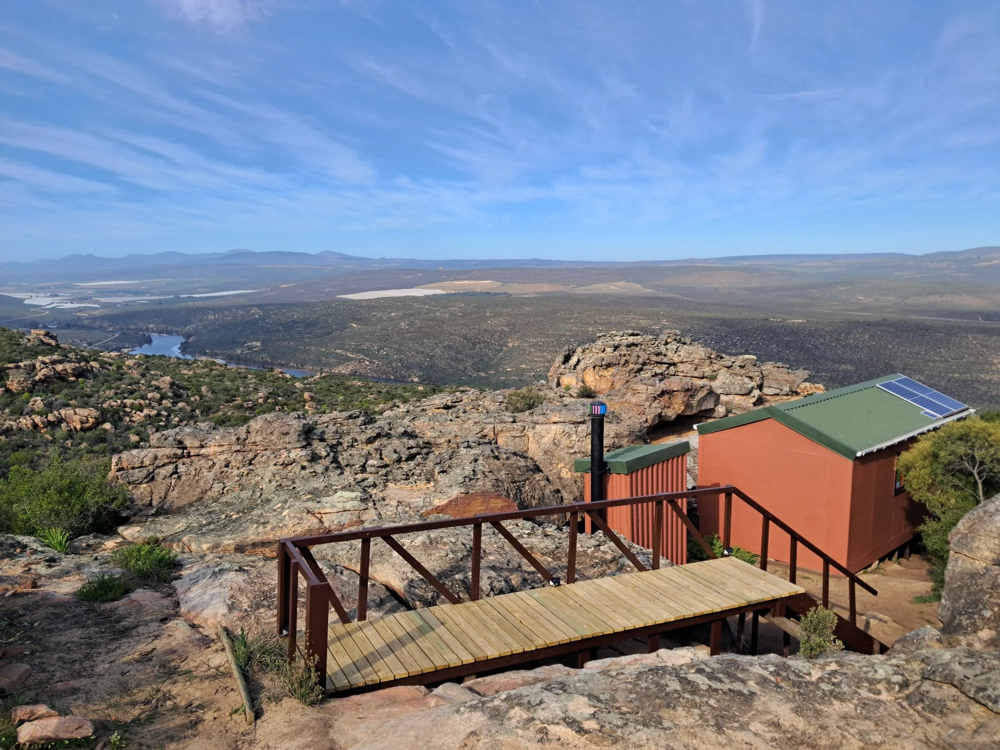

Nardouw · Cederberg
Nature meets comfort in the Cederberg
Experience the rugged beauty of the Cederberg with comfortable glamping created to connect you with nature. Set beneath Nardouwsberg, this quiet retreat is designed for simple, unhurried stays.
Explore accommodationBespoke wilderness living in the Cederberg
A quiet retreat shaped by the landscape.
Nardouw blends rugged wilderness with thoughtful comfort. Surrounded by the Nardouwsberg mountains, the cabin offers a peaceful place to reconnect with the outdoors, slow down and enjoy the silence.
Our story
Nardouw
Space to slow down.



Plan your Cederberg escape
Ready to experience Nardouw?
Send your preferred dates and we’ll reply personally with availability and everything you need to plan your stay.
EnquireUnwind in the Cederberg • Nardouwsberg • Wilderness living • Unwind in the Cederberg • Nardouwsberg • Wilderness living